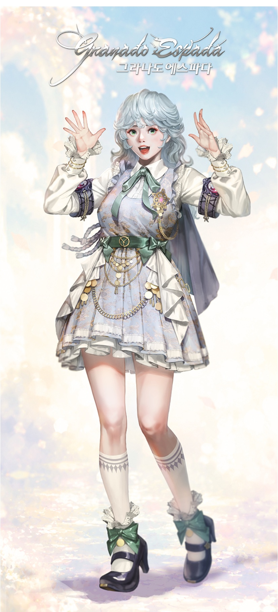
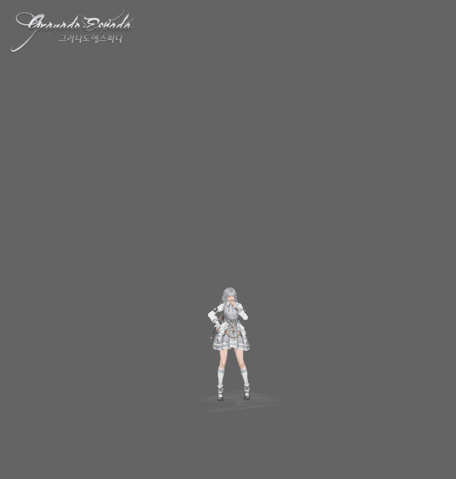
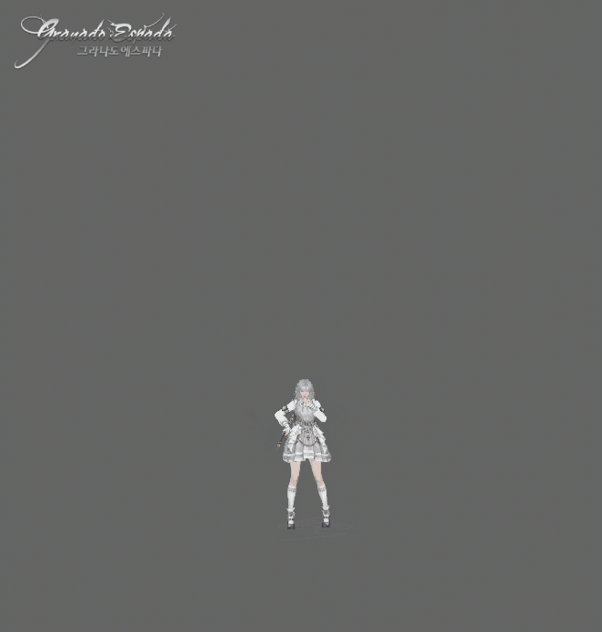
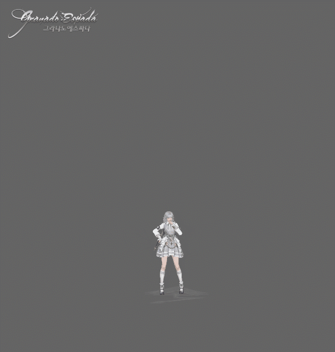
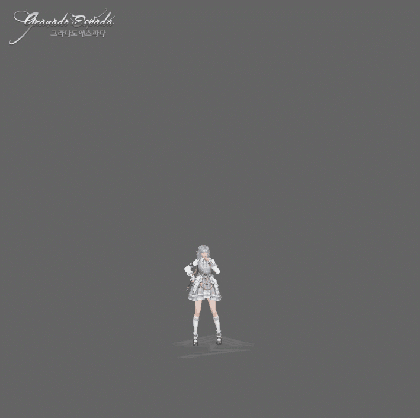
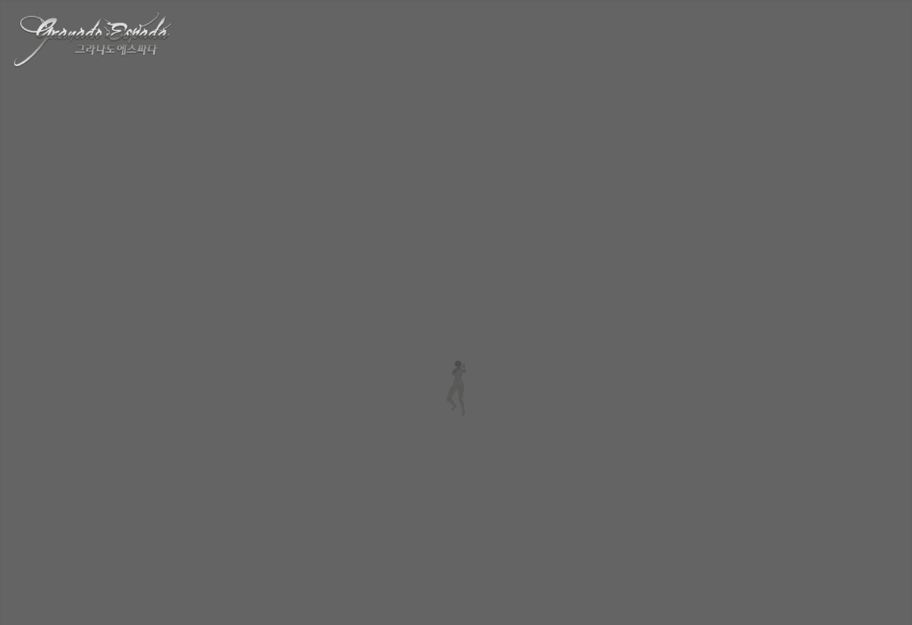
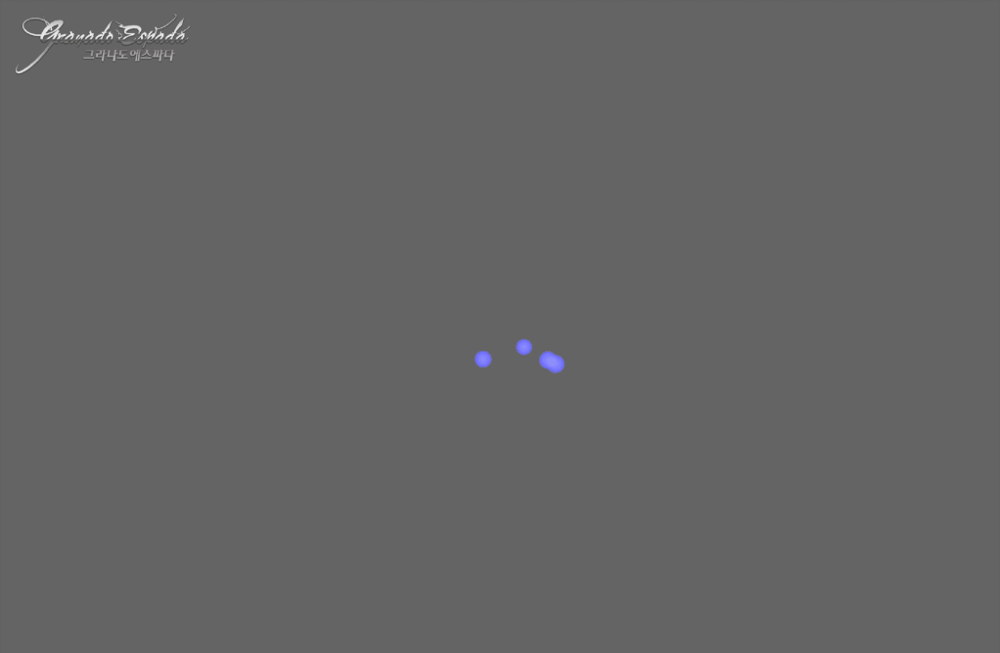

DEVELOPER'S NOTE · UNOFFICIAL ZH-HANT
變身高手，提雅
大家好，我是營運人員 L。
這次要介紹的角色，是最後一位阿斯塔蒂——「提雅」。
一起來看看她擁有什麼樣的權能吧！
提雅
阿斯塔蒂之中最年幼的一位，卻和德拉肯一樣，走過了艱辛的人生。
提雅出生於來自阿伊利斯的母親與來自塔爾加的父親之間。她是兩股不同勢力血脈交融而生的孩子，自出生起便是不完全屬於任何一方的邊界之人。
她出生時的阿伊利斯，受卡塔伊影響，飽受海盜無止境的掠奪。提雅在混亂中失去母親，被父親牽著手渡往塔爾加，並在那裡度過幼年。
父親是隸屬史特拉塔維斯塔的幹員。然而，史特拉塔維斯塔基於保密，極度忌諱幹員擁有家人等血緣牽絆。為了從企圖除掉自己的幹員手中活下來，提雅自幼便學會隱藏自己、假扮他人，培養出偽裝成別人的能力。
然而，就連一直作為她依靠的父親也在任務中離世。提雅被史特拉塔維斯塔收容，自幼便站上潛入與暗殺的最前線。
之後，她被投入史特拉塔維斯塔的機密任務——確保「大地之主」的作戰。但作為確保對象的「大地之主」阿特拉斯，卻向提雅提出了意想不到的提議……
「我會給妳要交給他們的情報，妳也把他們的情報交給我。」
也就是說，原本應該逮捕的目標，竟向她提出了成為雙面間諜的道路。最後，提雅經過思考，接受了這項提議。

開發者訪談
營運人員 L：所有阿斯塔蒂終於都登場了！我看過她的技能，想知道她擁有什麼權能。感覺她似乎能「複製」拷貝？
開發者德雷因：哦！很接近。不過，更精確地說，提雅並不是複製或拷貝其他阿斯塔蒂的權能。她從阿特拉斯獲得的是「變換權能」，能暫時借用目標的外貌與力量。
想到變色龍，應該就容易理解了。不過，那終究只是一借來的力量，不會真正成為提雅自己的力量。嚴格來說，她比較接近「變身高手」。
營運人員 L：原來如此，所以她在「保護」狀態時，才會由「德拉肯」登場行動！讓她借用既有阿斯塔蒂能力，而非提雅專屬能力的設計契機是什麼呢？
開發者德雷因：提雅能借用外貌的對象並沒有限制，但我們有意讓她主要展現阿斯塔蒂們的外貌。
提雅是各位最後見到的阿斯塔蒂，五個位置終於全部補齊了。因此，準備這名角色時，我們最先想到的是：希望能透過提雅，讓大家在同一個地方再次見到先前的四位。若最後介紹的阿斯塔蒂沒有前四位相伴，多少會令人覺得遺憾。
營運人員 L：使用方式和銀河相似，感覺不難……請說明該怎麼運用吧！
開發者德雷因：你看得很準確。提雅會依照職業技能施放期間使用的技能，獲得不同的「變換」增益。若你曾操作銀河的「天次分野」，應該也很快就能上手。
提雅的操作很簡單。先施放「達戈特」獲得「現場分析」增益，再以「達戈特」或「塔修維」對敵人留下「捕捉」減益，接著持續攻擊即可。不過，請記得留意，不要讓「捕捉」中斷！
| 增益／減益名稱 | 效果 |
|---|---|
| 現場分析 | 持續時間：180 秒 攻擊等級 +1 對怪物攻擊力 +80% 智力 +5 念力貫穿力 +15 |
| 捕捉 | 持續時間：30 秒 攻擊力 -5% 移動速度 -15% 免疫度 -5 |
基本介紹
- 「提雅」是使用「法杖（Rod）」的角色。
- 「提雅」穿著「法袍」。
職業技能：阿薩爾
指定並啟動從阿特拉斯獲得的變換權能。
| 共通 | 攻擊等級 +1 攻擊力 +50% 念力貫穿力 +10 最大 HP +10,000 最大 SP +300 免疫度 +10，所有受到的傷害 -5% |
|---|

HP 自然恢復量 +10,000，SP 自然恢復量 +100

解除周圍 10 m 內敵人的隱身，並對其套用「捕捉」

攻擊速度 +15%、移動速度 +15%、移動速度上限 +1.00

強化攻擊性能並取得「阿薩爾」共通增益
姿勢與技能
「提雅」使用魔法姿勢「伊斯提勒拉」。
伊斯提勒拉
達戈特
- 對範圍內的敵人施展壓制攻擊。
- 施放時對敵人套用「捕捉」。
- 無視異常狀態抗性。
- 施放時獲得「現場分析」。
- 「變換」狀態時，對怪物的技能傷害為 2 倍。
- 對敵人施放時，「探知克」冷卻時間減少 2 秒。
- 充能時間 15 秒，最多可使用 2 次；使用 1 次後開始重新充能。
伊斯提勒拉
伊戈瓦
- 運用變換權能借用阿斯塔蒂的外貌，對指定位置發動集中攻擊。
- 非「變換」狀態時，隨機施展技能。
- 命中「捕捉」狀態的敵方玩家時，有 90% 機率套用 2 級「束縛」。
- 「現場分析」狀態時，技能傷害為 2 倍。
移除範圍內自身角色受到的有害效果
恢復範圍內自身角色 10% HP
對範圍內敵方玩家造成 1.25 倍技能傷害
對範圍內敵方怪物造成 2 倍技能傷害
伊斯提勒拉
穆卡迪艾
- 運用變換權能借用阿斯塔蒂的外貌，展開大範圍攻擊。
- 在「阿薩爾」施放期間使用技能時，套用「變換－保護」。
施放期間，範圍內自身角色無法被攻擊
恢復範圍內自身角色 15% HP

對範圍內敵方玩家造成 1.5 倍技能傷害

對範圍內敵方怪物造成 3 倍技能傷害
伊斯提勒拉
塔修維
- 朝前方敵人噴射經過變換的魔力。
- 在「阿薩爾」施放期間使用技能時，套用「變換－成長」。
- 施放時對敵人套用「捕捉」，並無視異常狀態抗性。
- 「現場分析」及「變換」狀態時，技能傷害為 3 倍。
- 對「捕捉」狀態的敵方怪物，無視相當於「額外智力 × 0.25」的免疫度。
- 對敵人施放時，「探知克」冷卻時間減少 2 秒。
- 充能時間 24 秒，最多可使用 2 次；使用 1 次後開始重新充能。
伊斯提勒拉
探知克
- 將經過變換的魔力朝前方敵人爆裂般噴射。
- 在「阿薩爾」施放期間使用技能時，套用「變換－開拓」。
- 命中時有 60% 機率對敵人套用「緩速」。
- 「現場分析」及「變換」狀態時，技能傷害為 3 倍。
- 對「捕捉」狀態的敵方怪物，無視相當於「額外智力 × 0.25」的免疫度。